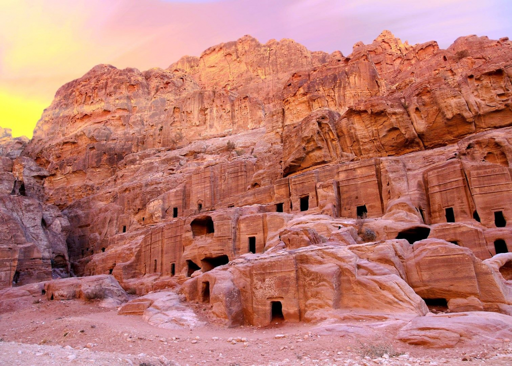
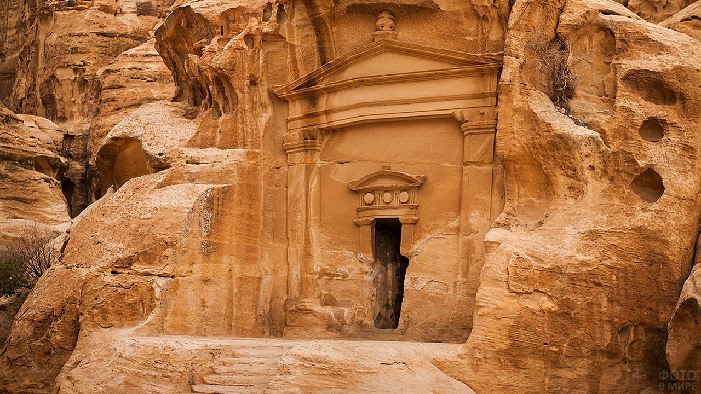
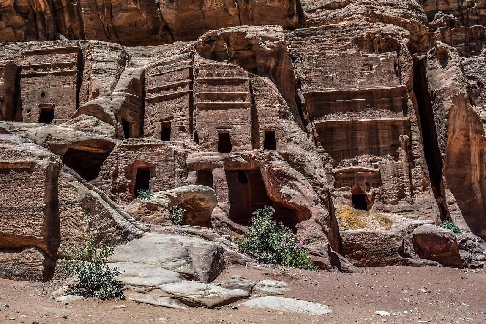
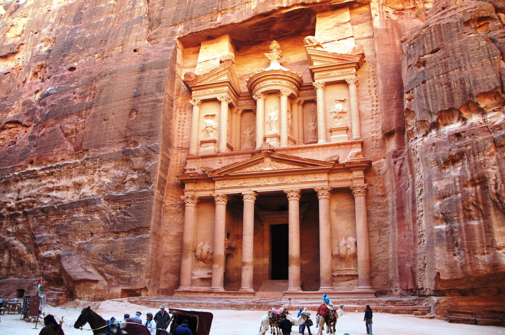
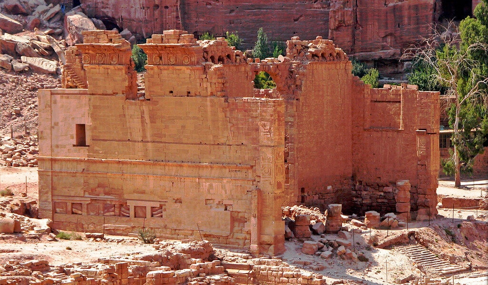
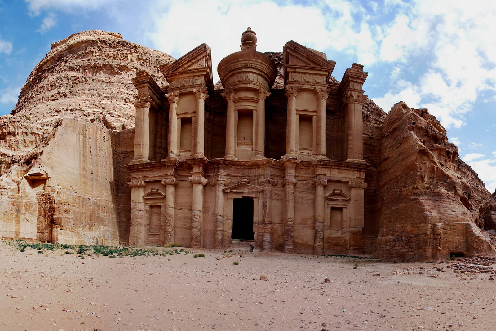
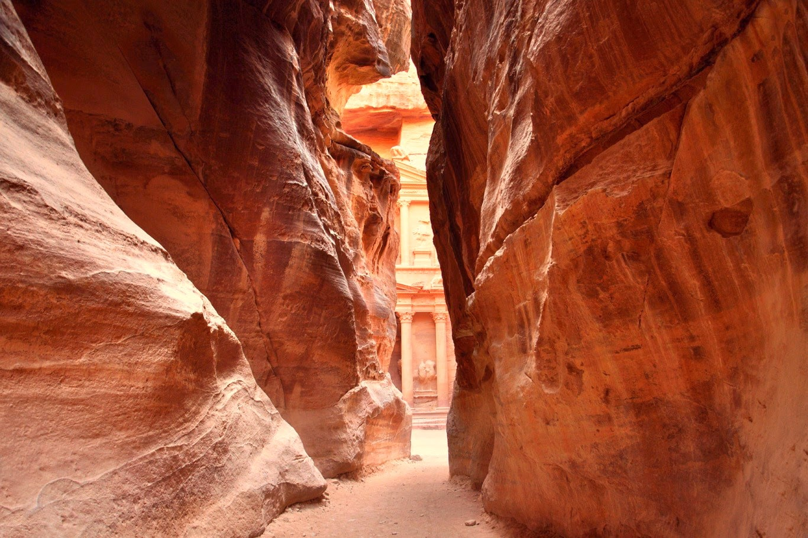

Пе́тра (араб. البتراء читается «Аль-Батра») — древний город, расположившийся на юго-западе Иордании, бывшая столица Идумеи, а позднее – Набатейского царства. Находится на высоте более 900 м над уровнем моря в узком каньоне Сик. До столицы Иордании – Аммана – расстояние составляет 236 км.

Название города Петра переводится с греческого как «скала», и неудивительно — ведь весь древний город целиком состоит из камня. А еще его называют «розовым» городом, так как при восходе и закате солнца скалы действительно отливают алым и розовым оттенком.
Скальный город Петра возник благодаря тому, что набатейцы – арабы-кочевники – сумели контролировать поступление воды, что было немаловажным для местности. Когда здесь случались ливневые наводнения, люди использовали цистерны и акведуки – это позволяло не только пережить засуху, но и давало доход от продажи воды путникам.

Фасады зданий были высечены прямо в стенах каньона, и они поражают воображение. Изящная резьба свидетельствует о высоком уровне развития этой цивилизации и мастерстве строителей. Главный вход в город называется Эль-Хазне, или Сокровищница. Так его прозвали местные бедуины, которые действительно верили, что там хранятся несметные богатства. Ворота вырезаны из прекрасного розового песчаника, благодаря чему Петру также называют Розовым городом.
В то время великий город Петра имел выгодное расположение, находясь на перекрестке стратегически важных торговых путей. Один из них соединял персидский залив и Газу, а другой – Красное море и Дамаск. Караваны, груженные пряностями, неделями переносили засуху Аравийской пустыни. А затем их ждал укромный каньон Сик, который и вел в Петру.

С развитием технологий появились морские торговые пути, а Петра потеряла свое стратегическое значение и осталась брошенной на произвол судьбы и скрытой в песках. Так она стала затерянным городом. Но нужно отметить, что Петра была затеряна только для западных цивилизаций, ведь местные знали о скрытой жемчужине пустыни. Племя бедуинов бдул жило в пещерах города. Они называли себя потомками набатеев и не хотели, чтобы кто-то еще знал о Петре, поскольку опасались, что люди придут туда в поисках сокровищ и разрушат остатки сооружений. Поэтому они хранили местоположение города в строжайшей тайне много лет.
Выходя из ущелья Сик, путешественник оказывается непосредственно перед Эль-Хазне, что в переводе с арабского языка означает «сокровищница, хранилище фараона». Вырубленное в скале здание высотой 40 м. и шириной 25 м. с классическими пропорциями, шестью колоннами и портиком, увенчано урной.
По некоторым предположениям, в ней находится прах правителей Петры, по другим — она полна золота. Эль-Хазне считают и храмом и мавзолеем, но точное назначение этой постройки не известно. Также ученые затрудняются ответить на вопрос, каким образом оно было построено. Деревьев для строительных лесов здесь нет, а висеть на скале при таком объеме работ нереально.
Изначальное назначение здания и дата его строительства долгое время оставались тайной. Некоторые ученые относили его к I в. до н. э., другие — к I—II вв. н. э. Однако современные ученые склоняются к мнению, что оно было возведено во времена правления Аретаса IV, умершего в 40 г. н. э. Есть мнение, что это было святилище Тихе (Исиды), богини, изображенной в центре фронтона с рогом изобилия в руках. По другой версии, это надгробие царя.

Этот храм, доминирующий в Нижнем городе, — важнейший набатейский храм Петры. Он был построен в I в. до н. э. «Дева», которой он посвящен, предположительно была дочерью фараона, жившей в храме, но страдавшей от недостатка воды. Она объявила, что выйдет замуж за человека, который обеспечит водоснабжение дворца. Вероятно, такой умелец нашелся, потому что при раскопках были обнаружены выбитые в камне каналы и водосток у подножия дворца.
Импозантный фасад сложен из блоков песчаника; его высота местами достигает 25 м. В центре храма находится святая святых, где раньше стояла статуя божества. Бюсты людей, стоявшие в нишах, были уничтожены в пылу борьбы с язычеством. Во времена римлян храм пришел в запустение, в византийский период и Средние века здесь были жилые помещения и конюшни.

Подъем к Ад-Дейру — для многих самая запоминающаяся часть прогулки по Петре. Вокруг открываются великолепные панорамные виды. В течение двух с половиной часов вы совершаете шествие по кругу от Каср Аль-Бинта мимо гробницы Львиного Триклиния, скального святилища (Каттар-ад-Дейр) и раннехристианского эрмитажа.
Неожиданно вы оказываетесь на краю огромной открытой песчаной террасы, а справа от вас возвышается колоссальный скальный фасад Ад-Дейра, при виде которого вы чувствуете себя пигмеем. Его высота 45 м, ширина — 50 м. Это самый большой монумент Петры. Высота урны наверху фасада — 10 м. Название «Монастырь» происходит от множества крестов, вырезанных на задней стене, что позволяет предположить, что это сооружение использовалось первыми христианами в IV в., привлеченными его уединенным расположением.
Первоначально это, скорее всего, был набатейский храм, однако некоторые ученые склонны считать это недостроенной гробницей одного из набатейских царей (о том, что гробница не достроена, свидетельствует отсутствие в нишах каких-либо статуй или иных украшений). Так же как Сокровищница, это здание датируется I в. н. э. Оно выдержано в том же стиле, хотя камень, использованный для Ад-Дейра, более желтый, а его линии более смелые и внушительные. Покорители вершин не смогут отказать себе в удовольствии взобраться к урне по полуразрушенным ступеням слева от фасада.

В стоимость включено: